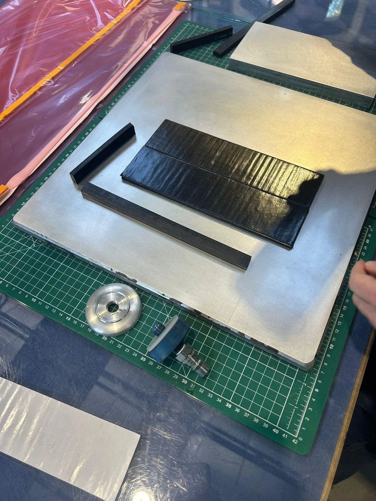
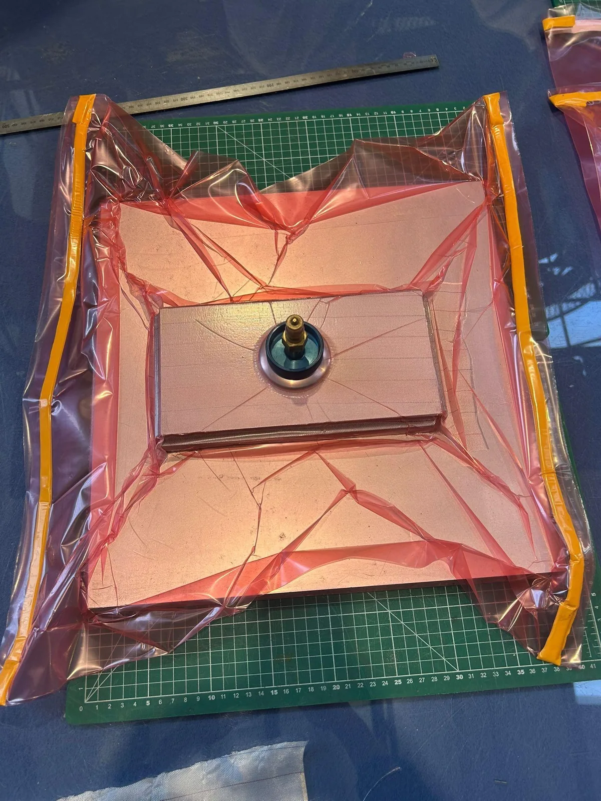
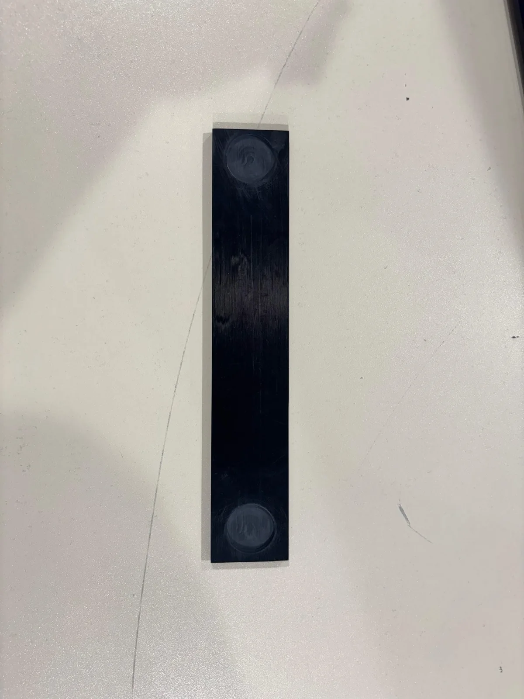
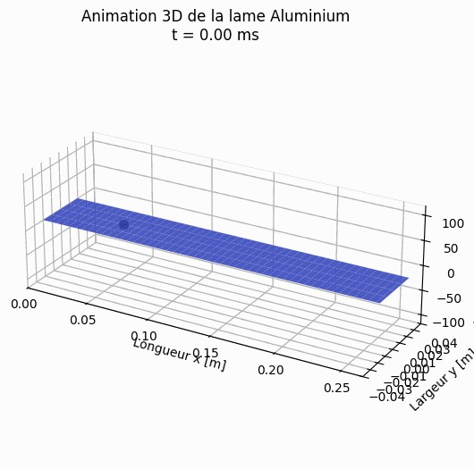
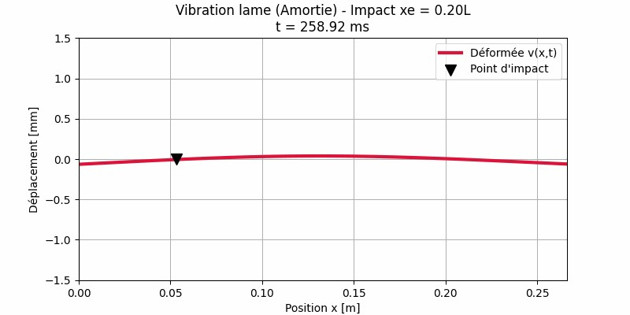
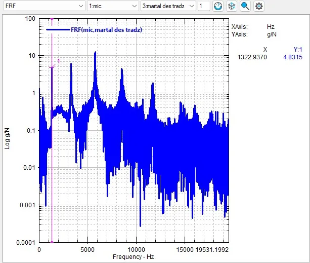

Comprendre la vibration
Modèles de poutre, amortissement et synthèse sonore sous Python. Les essais permettent d’identifier les modes de flexion et de torsion.
01 / MÉCANIQUE & SIMULATION
Le Compositeauphone : concevoir, fabriquer et accorder une lame de xylophone en matériaux composites.
LABORATOIRE VISUEL / FLEXION
Explorez une représentation pédagogique de la flexion. Le mouvement est volontairement ralenti et amplifié pour rendre la déformation lisible.
Illustration qualitative, et non résultat Abaqus. Changer l’aspect ne recalcule pas la fréquence : celle-ci dépend de la géométrie, de la rigidité et de la masse. Les simulations et les mesures du projet sont présentées ci-dessous.
01 / LE DÉFI
Changer de matériau transforme la vibration. Comment obtenir la note voulue avec une lame composite, alors que l’orientation des fibres et la fabrication influencent sa rigidité ?
Nous sommes partis des lames en bois et en aluminium pour relier géométrie, matériaux et fréquences propres. Puis nous avons transféré cette démarche à un stratifié composite, jusqu’à la fabrication et à la mesure de la pièce.
02 / LA DÉMARCHE
Modèles de poutre, amortissement et synthèse sonore sous Python. Les essais permettent d’identifier les modes de flexion et de torsion.
Un modèle analytique couplé à la théorie des stratifiés explore 1 024 configurations symétriques à 20 plis. Abaqus sert ensuite à vérifier les configurations retenues.
Drapage, mise sous vide, cuisson et découpe. Un contrôle ultrasonore examine la qualité du stratifié avant la caractérisation vibratoire.
La première fréquence mesurée est trop basse. Le retrait de matière aux extrémités permet de remonter la fréquence, avec un dimensionnement numérique puis une nouvelle mesure.



Photographies extraites du rapport collectif COSA, pages 29 et 41.
03 / EXPLORER
Ces gammes sont des sons de synthèse issus du projet. Elles rendent audible l’effet du modèle de lame et de son amortissement. Ce ne sont pas des enregistrements du prototype composite.


Le modèle analytique accélère l’exploration. Certaines orientations de fibres et les modes supérieurs exigent cependant une modélisation plus complète. L’intérêt est de savoir quand passer du calcul rapide aux éléments finis.
04 / DU CALCUL À LA MESURE
La mesure finale au microphone se situe à environ 5,7 cents de la cible, soit un écart de fréquence de 0,33 %. Une mesure par accéléromètre donne une valeur légèrement plus basse : la masse du capteur influence elle-même la vibration.

Résultats collectifs du rapport COSA, pages 42–44. La note « Mi6 » reprend la convention utilisée dans le projet.
05 / CE QUE J’EN RETIENS
Une bonne prédiction ne suffit pas : la fabrication et la mesure ont leurs propres effets.
Ce projet relie programmation, mécanique, choix de matériaux et expérimentation. Il montre aussi pourquoi il faut garder une marge pour le recalage : épaisseur réelle, hétérogénéité du stratifié et conditions de mesure peuvent déplacer la fréquence.
J’ai participé à ce projet avec trois autres étudiants. Les méthodes et résultats présentés sont ceux de notre travail collectif.
Passer du comportement d’une lame à celui d’un réseau de distribution.